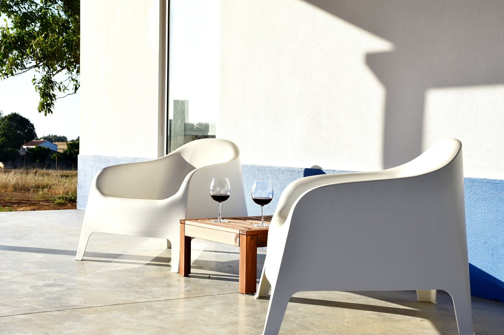
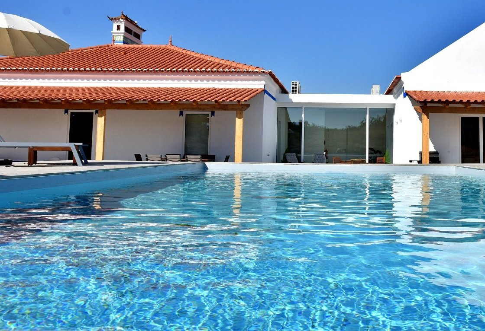

Monte Casa Branca · Montemor-o-Novo · Alentejo
Uma casa inteira.
O Alentejo à vossa porta.
Quatro quartos, piscina e campo à volta, a 1 hora de Lisboa e a 25 minutos de Évora. Só para o vosso grupo.
- Até 8 pessoas
- 4 quartos
- Piscina 10 × 5 m
- Ar condicionado em toda a casa
Sem receção. Sem pressa.
A casa
Por dentro.
Por fora.
Sem pressa.
Uma casa inteira no Alentejo, com quatro quartos, espaços para estar juntos e liberdade para cada um encontrar o seu ritmo. Ar condicionado em todas as divisões, lareira na biblioteca, cozinha equipada para mais do que oito e uma piscina de 10 por 5 metros à porta.
Chega-se ao fim do dia, abre-se a casa com o código da chave e não há mais ninguém à espera. Ao fim de semana, quando não há entrada no dia seguinte, o domingo pode ser vosso até ao pôr do sol.


Há dias em que não é preciso mais nada.
Dois copos, o fim da tarde no alpendre e o campo à frente.
A casa em detalhe
O exterior é rei.
A piscina, o alpendre e o jardim prolongam a casa para fora. A zona à volta é de uso livre, com o campo e o céu do Alentejo à frente e, de vez em quando, ovelhas a pastar.


A sala e a cozinha
Espaço para estar juntos.
O salão reúne a cozinha equipada, a mesa de refeições e a zona de estar, ligados ao exterior e à piscina. Na biblioteca há livros, jogos de tabuleiro e uma lareira para os dias de inverno.
- Cozinha equipada para mais do que oito pessoas, copos de vinho incluídos
- Mesa de refeições para o grupo inteiro, dentro e fora
- Biblioteca com lareira, livros e jogos

Os quartos
Quatro quartos. Até oito pessoas.
Dois quartos de casal e dois quartos com duas camas de solteiro; a configuração das camas combina-se antes da estadia. Duas casas de banho: uma privativa no quarto principal e uma partilhada.
- Ar condicionado em todas as divisões
- Roupa de cama e colchões novos
- Berço disponível a pedido

A mesma casa, uma nova vida. A casa foi renovada por inteiro; um dos quartos, antes e depois. Os onze pares de fotografias da transformação ficam na página das fotografias.
Quem cá esteve
A opinião de quem cá esteve
Passamos um mês na linda casa do Diogo para trabalhar e curtir o Alentejo. Não poderíamos ter encontrado melhor. A casa foi decorada com grande atenção aos detalhes e está muito bem equipada. Diogo foi muito simpático e prestativo e respondeu imediatamente quando tínhamos dúvidas. Tudo perfeito. Adoraríamos voltar.Hóspedes do Airbnb · 2023
Recebemos hóspedes desde 2022. Também estamos no Airbnb, no Booking e no Vrbo, se preferirem reservar por lá.
Antes de virem.
A casa é alugada por inteiro?
Sim. A casa é reservada na totalidade para o vosso grupo, até oito pessoas. Não há outros hóspedes nem receção.
Quantos quartos e casas de banho tem?
Quatro quartos e duas casas de banho: uma privativa no quarto principal e uma completa partilhada. Dois quartos são de casal e dois têm duas camas de solteiro; a configuração combina-se antes da estadia.
A cozinha está equipada?
Está totalmente equipada, com loiça, talheres e copos de vinho para mais do que oito pessoas.
A que horas podemos entrar e sair?
A entrada é a partir das 16h e a saída até às 11h. Antes de chegarem recebem por WhatsApp as indicações e o código da caixa da chave. Ao fim de semana, a saída mais tardia pode ser combinada quando não há entrada no mesmo dia.
Qual é a estadia mínima?
Habitualmente, duas noites. De 18 de julho a 31 de agosto, sete noites, de sábado a sábado.
A limpeza está incluída?
A limpeza final é cobrada uma vez por estadia e aparece separadamente no resumo do preço.
Podemos levar animais de companhia?
Sim, os animais de companhia são bem-vindos. Falem connosco para combinar os detalhes da vossa estadia.
Podemos pedir um berço?
Sim. O berço está disponível a pedido; indiquem essa necessidade antes da estadia.
Onde podemos estacionar?
Na entrada da quinta, junto ao tanque. As indicações de chegada incluem o sítio para estacionar.
Como é feito o pagamento?
30 % para confirmar a reserva e o restante até ao terceiro dia útil antes da entrada, por transferência bancária ou PayPal. Os detalhes são comunicados na confirmação.
Datas e disponibilidade
Falamos sobre as vossas datas?
Escolham os dias no calendário, vejam o tempo que se espera e simulem a estadia. A reserva é confirmada pelo Diogo, sem intermediários, ao melhor preço de todos os canais.
Calendário
Toquem no dia de entrada e depois no de saída. O calendário carrega com a demo.
Simule aqui a sua estadia
O total da casa inteira, com a limpeza, pela tarifa direta. A disponibilidade e o valor final são confirmados no pedido.
Preferem escrever-nos já?
Pedir estas datas
Indiquem as datas e contem-nos o que precisam.
Nesta demo nada é enviado nem gravado. Podem falar connosco por WhatsApp ou email.
Tarifa direta: o preço mais baixo de todos os canais e uma conversa com quem conhece a casa. Mínimo de duas noites; de 18 de julho a 31 de agosto, sete noites de sábado a sábado. Entrada a partir das 16h, saída até às 11h.
Onde fica
O Alentejo mesmo à porta.
Na Nacional 2, a 3 km do centro de Montemor-o-Novo e a 1 hora de Lisboa. Évora fica a 25 minutos, a praia da Comporta a 50 e o Alqueva a 1 hora.
- 3 kmCentro de Montemor-o-Novo
- 25 minÉvora
- 1 hLisboa
- 50 minComporta
- 1 hAlqueva

Explora Montemor-o-Novo
Sair para descobrir. Voltar para ficar.
Subir ao castelo, percorrer as ruas, descobrir o património e escolher onde parar à mesa. Montemor-o-Novo também faz parte da estadia, e a casa é o sítio para onde se volta ao fim do dia.
Nacional 2 · Montemor-o-Novo
Dois dias no coração do Alentejo.
Façam de Montemor-o-Novo uma pausa de duas noites na viagem pela Nacional 2. Um dia para descobrir Montemor. Outro para passear por Évora. E a mesma casa para regressar ao fim do dia.
Estadia mínima de duas noites. Para quem leva o passaporte N2, o Posto de Turismo de Montemor-o-Novo é um dos locais onde carimbar.
- Dia 1 · Conhecer Montemor. Cheguem durante o dia, subam ao castelo e percorram as ruas. A entrada na casa é a partir das 16h: guardem o fim da tarde para a piscina ou o alpendre.
- Dia 2 · Descobrir Évora. Depois do pequeno-almoço, saiam para Évora: o centro histórico, o Templo Romano, a mesa e as ruas. Ao fim da tarde, regressem ao Monte para a segunda noite.
- Na manhã seguinte, saída até às 11h e viagem à vossa medida.
Antes de chegar
As indicações, pela mão do Diogo.
Antes da entrada recebem por WhatsApp as indicações para chegar e o código da caixa da chave. Sem receção, sem esperas: a casa abre-se à vossa hora.
Contactos
Falar com o Diogo.
Para pedir datas ou tirar uma dúvida, escrevam por WhatsApp ou email. Responde quem conhece a casa, não um balcão.